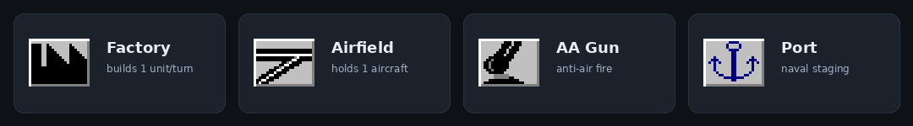

2650×1200 고정 보드는 육지 61개와 해역 53개, 합쳐 114개 지역으로 나뉩니다. 각 지역은 가치·건물·초기 배치·인접 관계를 가진 데이터 노드이며, 이 값들이 생산과 승패를 직접 결정합니다.
게임 첫 턴 기준 소유 분포입니다. 중립 지역이 67개로 가장 많고, 이 땅들이 초반 팽창의 표적이 됩니다. 추축국은 시작부터 중립을 공격할 수 있지만, 연합국은 원칙적으로 FFA(승리 후 무한전) 이후에만 가능합니다.
| 소유 | 지역 수 | 진영 | 메모 |
|---|---|---|---|
| 중립 | 67 | — | 생산 없음, 초기 병력 유지. 발칸·스칸디나비아·폴란드·이란 등 |
| 영국 | 16 | 연합 | 광대·분산된 식민지(캐나다·인도·아프리카·오세아니아) |
| 소련 | 10 | 연합 | 모스크바·우랄·시베리아 등 본토. 초기 자원 60% 제한 |
| 미국 | 9 | 연합 | 동부(20)·서부(16)·하와이·필리핀. 초기 자원 40% 제한 |
| 프랑스 | 4 | 연합 | 본토·북아프리카·상아해안·인도차이나. 최고 난도 |
| 일본 | 4 | 추축 | 일본·한국·만주·점령 중국 |
| 이탈리아 | 3 | 추축 | 이탈리아·리비아·동아프리카 |
| 독일 | 1 | 추축 | 본토 1개, 그러나 가치 24 = 세계 최고 단일 지역 |
전체 가치 236 가운데 상위 소수 지역이 큰 몫을 차지합니다. 승부는 이 고가치 핵심부를 누가 쥐느냐로 갈립니다.
모든 지역은 classic_regions.json에 좌표·크기·소유·가치·건물·초기 유닛·인접 목록으로 정의됩니다. 렌더러와 시뮬레이션은 이 데이터만 읽습니다(데이터·로직·UI 분리).
{ id:"WCAN", type:"land", owner:"uk", value:2, bld:"af2 p1", un:"uk:inf1", ne:"YUK NWT ONT WUSA" }land / sea — 육지·해역 구분. 렌더 시 베벨 색이 달라짐(육지 흰/검, 바다 하늘색/검).
매턴 수입이자 승점 기여. 0~24.
공장·비행장·대공포·항구, 초기 주둔 유닛.
인접 지역 ID 목록 = 이동·공격 그래프의 간선.

지역 사각형 프레임을 원작처럼 4면 입체 베벨로 그립니다(육지=흰/검, 바다=하늘색/검). 대륙 랜드마스크 위에 소유색 타이틀바·가치 배지·유닛/건물 아이콘 그리드를 얹습니다.
stretch를 끄고 네이티브 픽셀로 렌더해 21~30px 아이콘이 흐려지지 않게 합니다. 게임 시작 시 경계 없는 전체화면으로 전환합니다.
2650×1200 보드를 드래그로 이동하고, 화면 가장자리에서 자동 스크롤합니다.
우하단 축소 월드맵 + 노란 뷰포트 사각형. 클릭·드래그로 해당 지점으로 중앙 이동합니다.